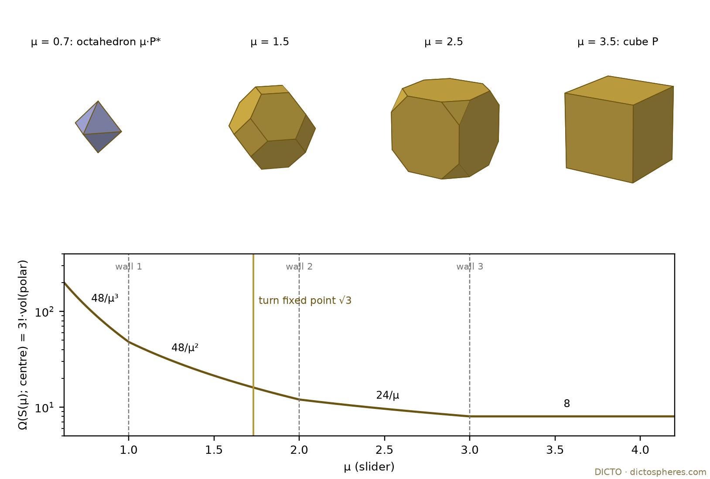
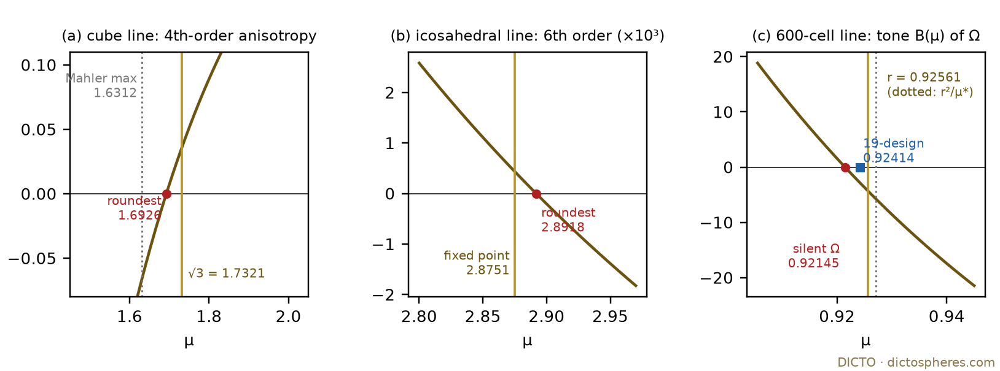
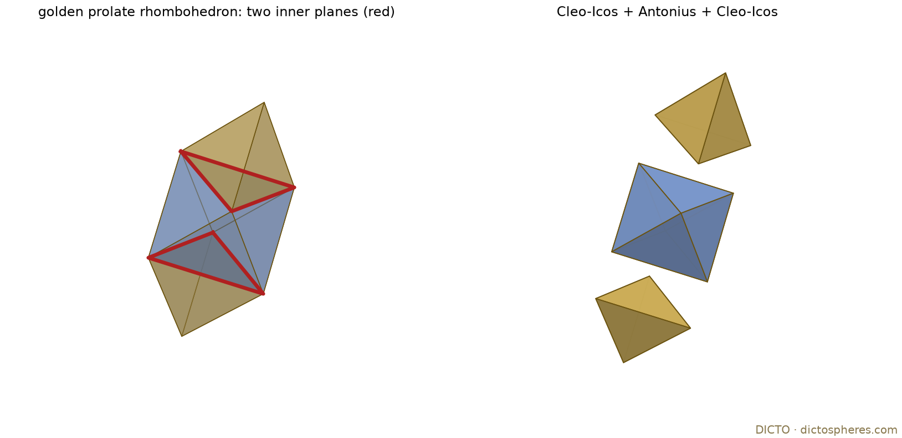
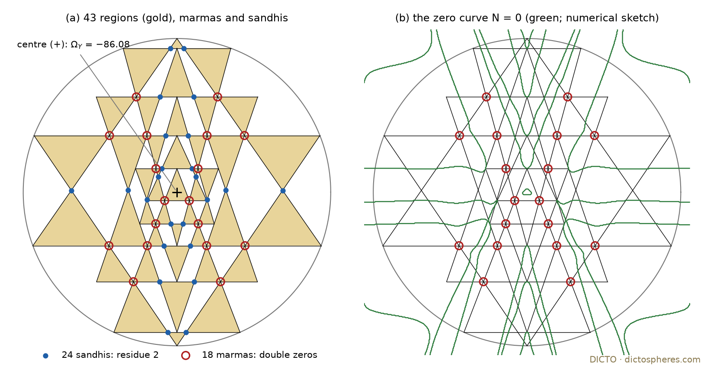

Canonical forms of DICTO's polar lines, solids and yantras: kinks at the walls, a turn that is not a symmetry, joins that cancel poles, marmas that are double zeros, and a counting law at the top rung of the Golden Ladder
In 2013 Arkani-Hamed and Trnka described a geometric object, the amplituhedron, whose "volume", made precise as its canonical form, is the scattering amplitude of planar N = 4 super Yang–Mills theory [1, abstract and §6]. The law is not put in by hand: in their words, "locality and unitarity emerge hand-in-hand from positive geometry" [1, abstract]. The tool that does the reading is the canonical form: a function attached to a shape that becomes infinite exactly on the shape's walls, and does so in the simplest possible way. Arkani-Hamed, Bai and Lam made this precise as the theory of positive geometries [2, §2.1], and Arkani-Hamed, Bai, He and Yan found the cleanest example: an associahedron living in the space of the particles' momenta, whose canonical form is the tree amplitude of the bi-adjoint scalar theory; one triangulation of it reproduces the sum over Feynman diagrams term for term [3, abstract, §1 and §3]. Mazzucchelli and Raman wrote such forms as Laplace transforms of measures on the dual shape, also when the walls are curved [4, abstract and §4].
DICTO set this as an aim of his study (9 November 2026): one geometric object that hands out laws. His own geometry already has the right parts. Every DICTO Hopscotch line moves a solid towards its polar along a slider; DICTO calls a shape facing its polar an antipol; and the canonical form of a polytope at a point is the volume of its polar about that point. So the antipol is the bridge between DICTO's lines and the amplituhedron's language. This paper asks what that language says about DICTO's lines, solids and yantras, and answers with theorems where we have them and labelled observations where we do not.
The answers, in one paragraph. Along a line the form has a corner (a kink) exactly at each of DICTO's walls. The turn, where DICTO's hopscotch turns round, is the place where every wall of the solid touches one sphere, but it is not a mirror for the form: the special points the form does pick out lie beside it. DICTO's solids that fill space together have forms that add, and their shared faces drop out of the sum. In the Śrī Yantra the marmas, where three lines meet, are where the yantra's form has a double zero. At the top of the Golden Ladder, in eight dimensions, the form of a slice of E8 counts the points of a four-dimensional quasicrystal.
Canonical form, positive geometry, residue [2, §1 and §2.1]. A positive geometry is a closed region X of real projective space with a rational top form Ω(X) whose poles are simple and lie only on the boundary, such that on each boundary component C the residue of Ω(X) is Ω(C), down to points, whose form is ±1. Every convex polytope is a positive geometry [2, §6.1.1]. In affine coordinates Ω(X) = Ω(X; Y) dY, and we call the function Ω(X; Y) the form.
The bridge. For a convex polytope P ⊂ ℝd and Y inside it, Ω(P; Y) = d!·vol((P − Y)°), where ° is the polar body (in projective form [2, §7.4.1, (7.174)], proved there by triangulation; in this affine form [5]). Two independent formulas are used throughout: a triangulation of P into positively oriented simplices, whose simplex forms add (the form is triangulation independent [2, §3, (3.4)]), and Warren's vertex (adjoint) formula, a sum over the corners of P (a corner on more than d faces is fanned over its dual polygon) [6]. The numerator of Ω over the product of the face forms is the adjoint; its degree drop is studied in [5].
Mahler product. M(P) = vol(P)·minY vol((P − Y)°) = vol(P)·Ωmin/d!; the minimum is taken at the Santaló point.
DICTO's polar line. For a polytope P centred at 0 with all facets at distance h and all corners at distance R, and its polar P*: S(μ) = P ∩ μ·P*. In the normalisation of DICTO's Turn Theorem (unpublished study, 9 November 2026), S(μ) = {n·x ≤ h for unit facet normals n} ∩ {v̂·x ≤ μ/R for unit corner directions v̂}, h² ≤ μ ≤ R²; the corner planes pass through the centres of the k-faces of P at the walls μ = ρk², the squared flag radii, and the intervals between walls are the chambers (DICTO's hops). The cube line: P = [−1, 1]³, S(μ) = cube ∩ {|x| + |y| + |z| ≤ μ}, walls 1, 2, 3. The icosahedral line: P = icosahedron (0, ±1, ±φ), walls (7 + 3√5)/6, φ², (5 + √5)/2. The 600-cell line: P = the White Queen (the 600-cell, circumradius 1), S(1) = the White Queen, S(r²) = the Red Queen (the 120-cell, scaled), r² = (7 + 3√5)/16, walls 1, (5 + √5)/8, 1/2 + √5/6, r² [25].
The turn. DICTO's antipol S∨ keeps the facet normals of S and inverts their distances. The Turn Theorem states S(μ)∨ = h−2·S(c/μ) with c = h²R², so the turn μ ↦ c/μ maps the line onto itself; its fixed point is μ = hR (√3 on the cube line, √((25 + 11√5)/6) = 2.875087 on the icosahedral line, r = 0.9256148 on the 600-cell line).
Yantra terms. A Śrī Yantra is drawn from nine triangles (27 sides) in a circle. The regions are the cells covered by an odd number of triangles (43 in the traditional pattern); the cells covered by an even number we call gaps. A marma is a point where three sides cross, each inside its own segment; a sandhi a point where two sides cross. ΩY is the sum of the forms of the regions, and N = ΩY·∏27 sides Lj its numerator.
Labels. Exact: proved, or computed in exact rational or algebraic arithmetic. High precision: computed at 300 and again at 600 digits, a quantity counted as zero only below 10−200 of its scale at both, not interval-certified. Numerical: floating point, quadrature or counting. Each statement carries its label.
The four theorems in brief: walls show up as corners in the form and the turn is not a mirror (Theorem 1); joining DICTO's solids cancels poles (Theorem 2); at E8 the form counts quasicrystal points (Theorem 3); in the yantra the marmas are double zeros (Theorem 4).
Theorem 1 (main theorem: the walls and the turn). (i) Exact. On the cube line, the icosahedral line and the 600-cell line, Ω(S(μ); 0) = ck·μ−k in each chamber, with k changing by one at every wall:
| line | Ω(S(μ); 0), chamber by chamber (μ increasing) |
|---|---|
| cube | 48/μ³ (μ < 1), 48/μ² (1 < μ < 2), 24/μ (2 < μ < 3), 8 (μ > 3) |
| icosahedron | 20(3 + √5)/μ³, 60(3 − √5)/μ², 60(7 − 3√5)/μ, 12(25 − 11√5) |
| 600-cell (4!·vol) | 600(5√5 − 11)/μ³ (r² < μ < 1/2 + √5/6), 1800(13√5 − 29)/μ², 1440(47√5 − 105)/μ ((5 + √5)/8 < μ < 1) |
Table 1. The canonical form at the centre along the three lines (exact).
The form is continuous along each line and has a kink (a jump in slope) exactly at every wall; its only pole is μ = 0. (ii) Exact, general. For every polytope P whose facets all lie at one distance h and corners at one distance R, the fixed point μ = hR of the turn is exactly the value at which all facets of S(μ) lie at one distance (the insphere point). On the cube and icosahedral lines S(c/μ) is similar to S(μ) only at the fixed point; since a canonical form determines its polytope (its poles are the facet planes), Ω(S(c/μ)) is never a moved or rescaled copy of Ω(S(μ)) except there, and the turn sends the middle walls off the set of walls. (iii) Exact values. The points the forms single out are algebraic numbers near the fixed point and not equal to it:
| line | point | value | exact form | fixed point |
|---|---|---|---|---|
| cube | roundest (order-4 anisotropy 0) | 1.692590 | root of μ⁴ + 2μ³ + μ² − 4μ − 14 | √3 = 1.732051 |
| cube | Mahler maximum | 1.631223 | root of 2μ³ − 9μ + 6 | √3 |
| icosahedron | roundest (order-6 anisotropy 0) | 2.891792659 | degree 12 over ℚ | 2.875087 (degree 4) |
| 600-cell | 19-design station μ* | 0.924138673 | degree 20 over ℚ | r = 0.925615 (degree 4) |
| 600-cell | silent point μΩ (B = 0) | 0.921449634 | degree 24 over ℚ (a degree-12 factor over ℚ(√5)) | r |
Table 2. The points the forms single out, against the turn's fixed point.
Each of these is the only such point on its line (cube: exact; icosahedron: exact, by exact root isolation in all four chambers, §5.3; the 600-cell line: exact, by exact root isolation in all three chambers, for both μ* and μΩ). The 1440 corners at μ* form the 19-design of Goethals and Seidel (Remark 1).
Theorem 2 (DICTO's joins are pole cancellations). (i) Exact. Each of Cleo-Icos, Antonius, the golden prolate rhombohedron, Narcissus, Covenant, the twisted cube, the DICTO Ogdoecontahedron (OG) and the DICTO Hecatodihedron passes the residue test on every face: the residue of its form on each face plane is the face polygon's own form (80 faces of the OG, 102 of the Hecatodihedron). (ii) Exact, as identities of rational functions. Ω(rhombohedron) = Ω(Cleo-Icos) + Ω(Antonius) + Ω(Cleo-Icos′) and Ω(Covenant) = Ω(Narcissus) + Ω(Narcissus turned over and turned 60°); the inner planes carry no pole; a mis-fitted join (the second Narcissus shifted 1/7 along the hexagon) leaves one. The icosahedron's form is the sum of its 20 Cleo-Icos forms (exact at 8 generic points), with no pole on any of its 15 inner planes. (iii) Exact. The Mahler products of Table 3, among them (384200 − 160400√5)/1539 = 16.5917 for the OG and 51/4 for both Covenant and the twisted cube.
Theorem 3 (the counting law at E8). (i) Proved from classical facts. For every lattice L ⊂ ℝn with Voronoi-relevant vectors r, Ω(conv{2r/|r|²}; 0) = n!·covol(L); for a root lattice with roots of norm 2, Ω(conv(roots); 0) = n!·√det. For E8: Ω(421; 0) = 8! = 40320. (ii) Proved. For the golden cut-and-project scheme of E8 (the Elser–Sloane quasicrystal [7]; see also [8]), with window W = π⊥(Voronoi cell), Ω(421 ∩ E⊥; 0) = 4!·(point density). (iii) Exact; not stated in [7] (read in full) or in [9, 10]. vol(W) = 5φ³/6 = 5/3 + 5√5/6 = 3.530057, so Ω(421 ∩ E⊥; 0) = 20φ³ = 40 + 20√5. (iv) Numerical. Counting E8 points with a generically shifted window gives the density to 0.981 of 5φ³/6 at radius 5.
Theorem 4 (the marma law). In every Śrī Yantra tested with the traditional crossing pattern (43 regions) and in the 45-region yantras: (i) exact, general: no two regions share a wall; ΩY = Σ∅≠I⊆{1..9} (−2)|I|−1 Ω(∩i∈I Ti); and at a point where three sides cross with the regions in alternate sectors the point residue is 0; (ii) N vanishes to order exactly 2 at each of the 18 marmas, and every sandhi carries point residue 2 (24 sandhis with 43 regions, 28 with 45, 22 for E1). Status of (ii): exact for the rational yantra R1 and the quadratic yantra Q3; high precision for the DICTO Yantra, Kulaichev's yantra, the 3-4-5 rhombus yantra Rh345 and E1, each of which has the crossing pattern of R1 or Q3 (checked). Hence a whole yantra is a signed sum of positive geometries and not a positive geometry itself.
Before reading DICTO's shapes we made sure the tools give the right answer on the one shape where geometry is known to hand out a physical law.
Proposition 1 (exact; the theorem is Arkani-Hamed, Bai, He and Yan's [3], the check and code are ours). For n = 4, …, 10 (dimension 1 to 7) the kinematic associahedron An cut out by the ABHY slice sa,b = −ca,b (random positive rationals) has Catalan(n − 2) corners (2, 5, 14, 42, 132, 429, 1430), every corner simple and unimodular (|det| = 1), and its form computed by Warren's formula equals the bi-adjoint scalar amplitude mn = Σ over planar cubic trees of ∏ 1/X exactly at 3 random rational points for every n, and identically for n ≤ 6; the triangulation formula agrees for n = 5, 6, 7.
Evidence. For n ≤ 8 a search through all (n − 3)-subsets of facets (up to 15 504) finds no other corner. Negative controls: mn with one tree dropped differs from Ω; a slice tilted along X1,3 still cuts a simple polytope with Catalan many corners, but some corners get |det| = 2 and Ω ≠ mn (n = 6, 7). A first control tilted along X1,4 was only a shear of coordinates and controlled nothing; it was replaced. The identity needs the unimodular slice, not only the shape of an associahedron. (Study 2026-11-12-abhy-associahedron, 48 checks.)
As the slider moves, the polar of the moving solid changes in one way inside a chamber and in another way after each wall; the form at the centre records this as a change of power, and the graph bends at every wall.

Proof of Theorem 1(i). Inside a chamber the corners of S(μ) are given by the same sets of facets, so the polar S(μ)° = conv(n/h, v̂R/μ) has fixed combinatorics and its volume is computed in closed form in μ (sympy, exact, one symbolic computation per chamber; on the 600-cell line in ν = 1/μ over ℚ(√5) on an exact pulling triangulation of the boundary of S°). The results are the formulas of Table 1. Each is a single power and the power changes by one at each wall. The form is continuous, because S(μ) and its polar move continuously with μ (and the adjacent formulas agree at each wall, checked). At a wall μw with common value f the two slopes are −k f/μw and −(k ± 1) f/μw, which differ: a kink (cube: −144 against −96 at μ = 1, −12 against −6 at μ = 2, −8/3 against 0 at μ = 3). A single power has no other kink and no pole except μ = 0. ∎ The bridge itself was checked exactly in every chamber: the triangulation formula equals 3!·vol(polar) at a generic point near the centre, (1/97, 1/89, 1/83), in 7 samples; two faults fixed on the way were inner triangulation faces through the centre (0/0 at the centre, so a generic point is used) and unoriented simplices.
The turn's fixed point is where the moving solid has one inscribed sphere touching all its walls; that is all that is special about it in this language.
Proof of Theorem 1(ii). The facets of P lie at distance h; those of μ·P*, at μ/R (the facet of P* belonging to a corner v is v·x ≤ 1, at distance 1/R). They are equal exactly when μ = hR, the turn's fixed point. A similarity of S(μ) to S(c/μ) keeps the two types of facets apart (6 against 8 facets on the cube line, 20 against 12 on the icosahedral line), so it keeps the ratio ρ(μ) = μ/(hR) of their distances; but ρ(c/μ) = 1/ρ(μ), so similarity needs ρ = 1. Under the turn the cube walls 1, 2, 3 go to 3, 3/2, 1 and the icosahedral walls (7 + 3√5)/6, φ², (5 + √5)/2 go to (5 + √5)/2, (5 + 2√5)/3, (7 + 3√5)/6: the ends swap, the middle wall leaves the wall set. ∎ Under the turn no weighted value μk·Ω(S; 0), k = 0, …, 3, is symmetric along a whole line; it is constant only where μ and c/μ both lie in the fixed point's own chamber (cube k = 2 on (3/2, 2), icosahedron k = 1). The Mahler product of the cube line, 32/3 at both ends, 32(−2μ³ + 9μ² − 9μ + 3)/(3μ²) on (1, 2) and 16(μ³ − 9μ² + 27μ − 21)/(3μ) on (2, 3), has its maximum 14.375086 at the root 1.631223 of 2μ³ − 9μ + 6, not at √3 (14.290624), and is not symmetric under the turn (M(3/2) = 128/9, M(2) = 40/3).
Away from the centre the form has a shape: round at first, with direction-dependent terms appearing at the first order the symmetry allows. Where that first direction-dependent term vanishes, the form is roundest. These points, and the design station and silent point on the 600-cell line, lie beside the fixed point, never on it.
Proof of Theorem 1(iii). Expand Ω(S(μ); t·u) = c0 + c2t² + c4t⁴ + … along unit directions u. Cube (exact): the order-4 anisotropy over c0 is −28/(9μ⁴), 2(μ⁴ + 2μ³ + μ² − 4μ − 14)/(9μ⁴), (3μ⁴ + 2μ³ − 2μ² − 8μ − 12)/(9μ⁴) and 1/3 in the four chambers; its only zero on the line is the root 1.692590 of μ⁴ + 2μ³ + μ² − 4μ − 14 in (1, 2), and at √3 it is 4(√3 − 1)/81 ≠ 0. Icosahedron: odd orders vanish and orders 2 and 4 are isotropic; in the chamber (φ², (5 + √5)/2), where every facet has distance 1 or μ, c0 = (420 − 180√5)ν and the order-6 anisotropy (corner axis minus face axis) is (640 − 128√5)/9 · ν · Q(ν), ν = 1/μ, with Q of degree 6 over ℚ(√5) (exact; given in the study); its root μ* = 2.891792659030825043 is a root of the irreducible 199μ¹² + 402μ¹¹ + 370μ¹⁰ − 1298μ⁹ − 8365μ⁸ − 26016μ⁷ − 47052μ⁶ + 52μ⁵ + 789μ⁴ − 670μ³ − 150μ² + 50μ + 25, not of (6μ² − 25)² − 605, the fixed point's. It is the only zero on the whole line 0 < μ < ∞ (exact): in each of the four chambers the anisotropy A is a polynomial in ν over ℚ(√5) (μ < (7 + 3√5)/6: 128ν⁹(255 + 113√5)/135; μ > (5 + √5)/2: a nonzero constant); every zero of A = P + √5R is a zero of its norm P² − 5R² ∈ ℚ[ν]; the real roots of each irreducible factor F of the norm are isolated in rational intervals of width below 10−40, compared exactly with the walls, and a root is a zero of A exactly when gcd(A, F) over ℚ(√5) changes sign on its interval; A is continuous and nonzero at the three walls (exact). The count is 0, 0, 1, 0. Since the degree-6 harmonic invariants of the icosahedral group form a line, A = 0 means that the whole order-6 part is isotropic (checked: the vertex-minus-edge difference is 27/32 of A). Controls: the cube line's single zero 1.692590, a double root counted once, a conjugate root inside the interval not counted. 600-cell line (exact, ℚ(√5)): every corner set is one W(H4) orbit, so it is a spherical 11-design throughout and a 19-design exactly where Klein's degree-12 invariant P12 vanishes on it (W(H4) has no invariant harmonic of degree 13 to 19, by Coxeter's basic degrees 2, 12, 20, 30 [15]; this is Sobolev's theorem [36] with the corollary for a single invariant of degree t + 1, as stated by Sloane, Hardin and Cara [34, §II], and the route of Goethals and Seidel [13]); P12(x(μ)) is an exact degree-12 polynomial in μ whose only root on the whole line (exact root isolation in each of the three chambers, as for the icosahedron; nonzero at the four walls) is μ* = 0.924138673238867458601238076667, of degree 20 over ℚ (minimal polynomial in the study). On the form, every Taylor coefficient is a W(H4)-invariant polynomial, so Ω(S(μ); y) = f(|y|²) + B(μ)·P12(y) + O(|y|14): isotropic through order 11, and first sounding the lowest mode of the Poincaré dodecahedral space [14, 25] at order 12. B(μ) is an exact polynomial over ℚ(√5) divided by μ13, μ14, μ15 in the three chambers; it is positive on the two inner chambers and has exactly one zero on the whole line, μΩ = 0.921449634428905791812131090257, root of a degree-12 factor irreducible over ℚ(√5), of degree 24 over ℚ (exact: the same root isolation in all three chambers, B nonzero at the four walls). The isolating intervals give μΩ < μ* < r exactly, so B(r) < 0 (B(r) = −4.2971334197) and P12 does not vanish on the corners at r; the turn images r²/μΩ and r²/μ* lie in the same chamber and, each station being the only one of its kind, are not stations. None of these numbers has the fixed point's minimal polynomial. ∎

On the 600-cell line, μΩ = 0.921450 < μ* = 0.924139 < r = 0.925615 < r²/μ* = 0.927093: three distinct points within 0.0042, in the chamber that holds the fixed point, and the turn keeps neither station. μ* refines the grid value 0.924165 of [25, Ch. 9] (a 400-point grid; the difference, −2.6·10−5, is within one grid step). Numerical check of the station: the 1440 corners at μ* are silent to 10−16 in degrees 2 to 18 and sound at degree 20 at 8·10−8 (float moments). Controls (40 checks): the cube line reproduced by the same code; both Queens exact 11-designs that sound at degree 12; P12 harmonic; left and right multiplication by icosians permutes the corners; the B4 line (tesseract ∩ μ·16-cell) is anisotropic at order 4, so the code sees anisotropy where the group allows it; dropping one simplex breaks order-2 isotropy; μ* + 1/1000 is not a station.
Remark 1 (exact; the design itself is classical). A 1440-point orbit of W(H4) has a point stabiliser of order 10; stabilisers of points in a reflection group are parabolic subgroups, so it is of type I2(5), and its fixed cone in a chamber runs from a 600-cell vertex v to the midpoint of an edge vw. So the 1440-point orbits are exactly the corner sets of S(μ) in the truncated-600-cell chamber, x(μ) = v + s(w − v), s = (1 − μ)/(1 − φ/2), and the exact count there (one zero of P12, with the degree-20 minimal polynomial) shows: exactly one 1440-point orbit of W(H4) is a spherical 19-design, the corners of S(μ*). De la Harpe, Pache and Venkov [33, §1] write that any orbit of W(H4) "is a spherical design of strength 11, but there is a special orbit of size 1440 which is of strength 19", citing Goethals and Seidel [13, §5]; by the uniqueness, that orbit is this one. What is new here is its exact place on DICTO's line (μ*, degree 20 over ℚ) and the uniqueness, not the design. In the tables, nothing of this size is listed: Hardin and Sloane's designs [35] lie on the 2-sphere, and the four-dimensional table of Sloane, Hardin and Cara [34, Table 1] runs to N = 100 points, plus the 600-cell (N = 120, strength 11). A strength-19 cubature formula with unequal weights on 720 points (the 600-cell's vertices and the centres of its 600 cells) is Salihov's [37], as reported in [33, §1 and Table 7]. (Study 2026-11-12-pds-hopscotch-line, pds_unique.py: P12 built from the 120 vertices, harmonic and icosian-invariant, checked exactly; positive and negative controls.)
A shape's form has a pole on each of its faces. When two of DICTO's solids are joined face to face into a larger one, the shared face is no longer a wall, and the two forms' poles there cancel exactly; when the join is off, a pole is left behind.

Proof of Theorem 2. (i) For every face F of each solid, ResF Ω(P) was computed and compared with Ω(F) exactly (in ℚ or ℚ(√5)) at 3 generic points of the face plane; Warren's formula equals the triangulation formula at 8 generic points (4 inside, 4 outside) for every solid; and Ω(P; Y) = 3!·vol((P − Y)°) at 4 interior points. (ii) The join identities were proved as identities of rational functions: the cleared numerator has degree at most 5 (rhombohedron, 8 planes) or 10 (Covenant, 13 planes) in each variable and vanishes on a 6³ or 11³ grid, hence is zero. For the icosahedron the sum of 20 Cleo-Icos forms equals its form at 8 generic points (exact evaluations), and the residue on each of its 15 inner planes (each holds two opposite edges and four Cleo-Icos faces) is 0. Negative controls (all caught): one Warren term dropped (OG) breaks the match with the triangulation; Antonius treated as simple breaks the bridge; the mis-joined Narcissus pair leaves a pole on the hexagon plane; an off-axis point separates the Covenant and twisted-cube forms. (iii) Table 3; the Santaló point of Narcissus is found exactly below. ∎ That a convex polytope is a positive geometry and that canonical forms add over subdivisions are known in general [2, 5]; what is proved here are DICTO's particular joins as identities, with their exact values.
| solid | faces / corners | Ω at the Santaló point | Mahler product Ω·vol/3! |
|---|---|---|---|
| Cleo-Icos | 4 / 4 | 192 − 64√5 | 64/9 = 7.1111 (affine simplex) |
| Antonius | 8 / 6 | 72 − 24√5 | 32/3 (affine octahedron) |
| golden prolate rhombohedron | 6 / 8 | 48 − 16√5 | 32/3 (affine cube) |
| Narcissus | 10 / 10 | (see text) | 11.078716400698901373 |
| Covenant | 12 / 14 | 51 (rational frame, vol 3/2) | 51/4 = 12.75 |
| twisted cube | 12 / 11 | 51 | 51/4 = 12.75 |
| icosahedron (edge 2) | 20 / 12 | 300 − 132√5 | (400 − 160√5)/3 = 14.0764 (classical) |
| OG | 80 / 102 | 2580 + 156√5 (scale of the study data) | (384200 − 160400√5)/1539 = 16.591745555 |
| Hecatodihedron | 102 / 80 | (2050 − 870√5)/513 | as the OG (polar pair) |
Table 3. Exact Mahler products (study 2026-11-12-solids-canonical, 86 checks). Narcissus is taken in the rational frame (x, √3y, √(3/2)z), harmless because canonical forms and Mahler products are affine-covariant.
Corollary 1 (exact). (a) Narcissus: the Santaló point lies on the three-fold axis at depth 0.300092257 of a layer below the hexagon, the root in (−1, 0) of 4z³ + 19z² + 32z + 8, and the Mahler product there is the root 11.0787164 of the irreducible 2304m³ − 25440m² − 943m − 30: below the corner-centroid value 34/3 of [27] and above 64/9, the three-dimensional Mahler bound (proved for centrally symmetric bodies by Iriyeh and Shibata [16]; for all bodies by Chen, Li, Xi and Xu, preprint [17]). (b) Covenant and the twisted cube have the same form along the whole three-fold axis (the 60° turn fixes the axis and has determinant 1), hence the same Santaló point, the hexagon's centre, although the twisted cube has no centre of symmetry, and the same Mahler product 51/4; off the axis and its mirror planes their forms differ. (c) The OG is the roundest solid of the set: 16.5917 is 94.6% of the ball's (4π/3)² = 17.5460 (icosahedron 80.2%); the centrally symmetric values satisfy 32/3 ≤ M [16], M ≤ 8E/9 (E = number of edges; Winter's flag-number bound [18]) and M ≤ (4π/3)² (Blaschke–Santaló).
Observation 1 (adjoint degree on a generic line; exact). OG 76 and Hecatodihedron 98 (faces − 4, Warren's bound reached), icosahedron 16, Antonius 4; lower where faces are parallel: cube 0, rhombohedron 0, Covenant 6 of 8, Narcissus 5 of 6, twisted cube 7 of 8. This fits the degree-drop theory of Baumbach, Freyer, Weigert and Winter [5], in which parallel faces lower the degree and zonotopes (the cube, the rhombohedron) have the largest drop.
A round solid has no corners on its circles, and its form vanishes. Cut a DICTO Yantra cone in half along the yantra's own plane and the form comes back; its residue on that plane is the flat yantra triangle.
Proposition 2 (exact, as identities in symbolic apex height a, base height b, radius w; and for the nine DICTO Yantra cones of [24, Prop. 4] with their 40-digit values as rationals). (i) Ω = 0 for a whole circular cone and for every solid of revolution bounded by cones about the axis and level planes (the spun yantra regions): their boundary parts are bounded by whole circles, a circle's form is 0, so the solid's form has no poles. (ii) The half-cone H = cone ∩ {y ≥ 0}, cut by the yantra's plane, is a positive geometry with Ω(H) = 2wh²/(Q·B·y), Q = w²(z − a)² − h²(x² + y²), B the base plane, h = b − a; its residues are the flat yantra triangle on y = 0 (Q restricted there is the product of the two legs), the half-disc on the base, and arc × ruling on the cone; Ω(H+) + Ω(H−) = 0. So Resy=0 Σi Ω(Hi) = Σi Ω(Ti): the flat yantra's nine triangles are the residues of the nine half-cones. (iii) Slices of the cone of angle below 180° are positive geometries; they add with pole cancellation and close up to 0 round the axis, including the three 120° slices of the stella's three positions. (iv) Every half-cone is an affine image of one, so the least value of Ω sits at a quarter of the height and 1/√3 of the radius there, and Ωmin·vol/3! = 64√3π/81 = 4.29938 for all nine cones: the degree-160 numbers of the DICTO Yantra enter only through where the cones sit. (v) Numerical (20 digits). The bridge "Ω = volume of the polar" fails for the cones (by 44% to 282% at four test points); it holds with Mazzucchelli and Raman's arctan weight on the dual cone [4, (61); equation numbers of their version 2].
In the plane these facts are Arkani-Hamed, Bai and Lam's: the disc has canonical form 0 (its only possible pole is the circle, whose form vanishes), the northern and southern half-discs have opposite forms, the northern one 2/((1 − x² − y²)y) [2, Example 5.2, (5.12), and the paragraph after it], and a sector of the disc (their "pizza slice") is a positive geometry [2, Example 6.1]. Proposition 2 is their three-dimensional analogue for the cones; the half-cone's form is the half-disc's form times a ray, exactly.
Evidence. Residues by Leray's formula; unknown numerators by a linear ansatz of the degree fixed by projective weight; 126 checks, among them the half-disc and Mazzucchelli–Raman's (55) at a = 1/2 as positive controls, and negative controls (constant 3wh² instead of 2wh² fails the base residue; halves with apexes 1/7 apart leave a pole on the yantra plane; the arctan sign flipped misses by 19% and 64%). (Study 2026-11-12-yantra-cones-canonical.)
In a Śrī Yantra the regions and the gaps alternate like the squares of a chessboard, so the forms of two regions never meet along a wall. Where three lines cross at a marma, the three regions round it sit in alternate sectors and their forms cancel there to second order: the marmas are the zeros of the yantra's form. Where two lines cross at a sandhi, the two regions add, and the residue is 2.

Proof of Theorem 4(i). Crossing one side changes the number of covering triangles by exactly one, because no two sides of different triangles lie on one line (checked); so two regions (odd count) never share a wall. The indicator of an odd count is Σk≥1 (−2)k−1 ek of the nine triangle indicators (ek the elementary symmetric functions: for c covering triangles, Σk C(c, k)(−2)k−1 = (1 − (−1)c)/2), and the canonical form is a valuation, which gives the signed sum over all 511 intersections (all nonempty: 9, 36, 84, 126, 126, 84, 36, 9, 1). Local lemma (symbolic, sympy): for k lines through one point and the 2k sectors alternately in and out, the sum of the forms of the "in" sectors is 0 when k is odd (checked for k = 3, 5) and twice the sum over a half-turn when k is even. At a marma the three regions sit in alternate sectors, so the point residue vanishes. ∎
Proof of Theorem 4(ii) and evidence. For R1 (the rational Śrī Yantra) and Q3 (a 45-region yantra with all coordinates in ℚ(√Δ)) everything is exact: the arrangement, the forms, N by interpolation on a 26 × 26 grid (a polynomial of degree ≤ 25 vanishing on that grid is zero), the order of vanishing of N at every crossing by exact derivatives, and the point residues. For the DICTO Yantra the great slope u is a root of an irreducible integer polynomial of degree 160; u is isolated exactly by a sign change of that polynomial on an interval of width 10−280 (10−580), the other values follow by Newton from two corner conditions, and the third condition (bindu centred), never imposed, then holds to 1.5·10−294 (1.9·10−593). R1 and the DICTO Yantra have the same 74 cells, each with the same triangles and side lines, and the same type, number of lines and order of N at every point on the drawn sides; so the exact structure of R1 is the structure of the DICTO Yantra, whose values agree between 300 and 600 digits to 6.7·10−292. The same holds for Kulaichev's yantra (u of degree 348) and Rh345 against Q3, and for E1 at 300 and 600 digits. Controls: a region's sign flipped breaks the signed-sum identity; a flipped normal breaks vertex = fan; a region plus its gap neighbour has pole exponent 0.000 on their shared wall, and 1.000 once the gap is moved 1/1000 off it; with one base of R1 moved 1/1000, a marma splits into 3 ordinary sandhis with residue 2 each: the double zero needs exact concurrency. ∎ (Studies 2026-11-12-yantra-regions-canonical, 62 checks, and 2026-11-12-yantra-regions-45.)
| point | 43 regions (DICTO Yantra, R1) | 45 regions (Kulaichev, Rh345, Q3) | E1 | lines m | order of N | point residue |
|---|---|---|---|---|---|---|
| marma | 18 | 18 | 18 | 3 | 2 | none |
| sandhi | 24 | 28 | 22 | 2 | 0 | 2 |
| free triangle corner | 14 | 14 | 14 | 2 | 0 | 1 |
| tip on a base | 7 | 7 | 7 | 3 | 1 | |
| corner touch | 6 | 6 | 4 + two 4-line points | 3 (4) | 1 (2) | |
| crossing of extended sides off the drawn sides | many | many | many | 2 | 1 | 0 |
Table 4. The point table. With 45 regions (41 triangles and 4 four-sided regions; all cells convex) only the number of sandhis changes. E1 (the most even yantra of [24]) lies exactly on its defining edge, where t4's leg passes through t5's corner: two 4-line points appear (N of order 2 there) and the sandhis drop to 22.
Proposition 3 (the zero curve of the DICTO Yantra). N = 0 is an irreducible curve of degree 24 and genus 207; its only singular points are the 18 marmas, each an ordinary double point with a definite tangent cone (an isolated real point), and one ordinary 8-fold point at infinity, where the 9 parallel bases meet (the alternate-sector lemma for parallel lines). It misses the bindu centre and meets the circle in 26 real points. Status: exact for R1 (PARI resultants of degree 248 and 225, gcds over ℚ); high precision for the DICTO Yantra (same answer at 300 and 600 digits); the count of 10 real components in the projective plane (31 real arcs in the affine plane, 7 of them closed ovals) is numerical (120 digits, not certified). Irreducibility: two components of degrees a + b = 24 would meet in ab points, all singular, at most 18 + 16 = 34 of them, which leaves only a line, and no line carries the 23 nodes it would need.
Observation 2 (the sign at the centre; high precision). ΩY at the circle's centre is −86.08 for the DICTO Yantra and positive for every other yantra tested: R1 +1649.8, Q3 +83.37 (exact value in ℚ(√Δ)), Kulaichev +27.45, Rh345 +26.17, the rhombus yantra just below its 45-region threshold +14.64, E1 +343.29. The crossing pattern does not fix the sign; why only the DICTO Yantra is negative is open.
Proposition 4 (where E1's evenness shows; the identity is exact, the values high precision). For every triangle T, Ωmin(T)·area(T) = 27/2 (affine invariance and the standard triangle, least value 27 at the centroid). So for a yantra whose regions are all triangles, the spread of the regions' areas is the spread of 1/Ωmin: E1 0.614 against 0.866 for the DICTO Yantra (Kulaichev 0.782, whose four-sided regions give 13.545 and 13.550 instead of 27/2). E1's least form values have the narrowest range (983 to 49 030, ratio 49.9; DICTO Yantra 88.4; Kulaichev 3.1·105, the tiny triangles). The residues do not see evenness: they are fixed by the crossing pattern.
At the top rung of DICTO's Golden Ladder the 240 roots of E8 are the 120 unit icosians and the same divided by φ [26]. The canonical form of the polytope of these roots, read at its centre, is 8! times the volume of the cell that each lattice point owns; cut by the golden four-dimensional slice, it is 4! times the number of quasicrystal points per unit volume.
Proof of Theorem 3. (i) The Voronoi cell of a lattice is {x : x·r ≤ |r|²/2 for the relevant vectors r} = conv{2r/|r|²}°, and its volume is the covolume; the bridge gives Ω(conv{2r/|r|²}; 0) = n!·covol. For root lattices the relevant vectors are the roots [11, ch. 21], which for norm 2 are fixed by r ↦ 2r/|r|²; E8 is unimodular, so Ω(421; 0) = 8!. (ii) For a convex body K with 0 inside and a subspace E, the polar within E of the section K ∩ E is the projection of K° onto E (projection–section duality, as stated in Arya and Mount [19, Lemma 2.1]). With K = 421, K° = the Voronoi cell V, E = E⊥: (421 ∩ E⊥)° = π⊥(V) = W, so Ω(421 ∩ E⊥; 0) = 4!·vol(W), and vol(W)/covol(E8) is the point density of the cut-and-project set [9, 10]. (iii) The window W was built exactly: hull proposed by qhull and decided in exact ℚ(√5) arithmetic (every facet normal solved through 4 points, every incidence tested exactly); vol(W) = 5φ³/6 in the true 8D metric. (iv) Counted points of E8 in a ball of radius 5 with a generically shifted window: ratio 0.981 to the predicted density; the closed window counts about 10% more, because lattice points on its boundary have positive density. ∎
| object | exact value | remark |
|---|---|---|
| Ω(421; 0) | 8! = 40320 | vol(Voronoi E8) = 1 |
| vol(421), roots of norm 2 | 57/7 | 17280 α7 cones of 1/13440 + 2160 β7 cones of 1/315 (all 19440 facet cones, no symmetry used) |
| Ω(Voronoi E8; 0) | 8!·57/7 = 328320 | Mahler product of the pair 57/7 = 0.4943 of the Blaschke–Santaló bound (π⁴/24)² |
| window W = π⊥(Voronoi) | vol 5φ³/6 = 3.530057 | 720 corners (600 on 4 facets, 120 on 30), 1200 facets of 5 corners: the counts of the dual of the rectified 120-cell |
| slice 421 ∩ E⊥ = W° | Ω(0) = 20φ³ = 40 + 20√5 | 1200 corners on one sphere, 720 facets (600 with 4 corners, 120 with 30): the counts of the rectified 120-cell |
| Ω(W; 0) = 4!·vol(421 ∩ E⊥) | −17574000 + 7859400√5 = 152.6624 | |
| shadows π(421) in E∥, E⊥ | 600-cells, radius² 1 + 1/√5 | Ω(0) = 4!·vol(Voronoi ∩ E) = −495000 + 221400√5 = 65.4502 (the section is a 120-cell) |
Table 5. E8 and its golden shadows and slices (study 2026-11-12-e8-canonical). The twin side, π∥(Voronoi), has the same true radii, volume, Ω values and point counts; the two windows are congruent (exact): φ⁻¹·P·σ, with σ the golden twist √5 → −√5 and P an odd signed permutation of the four coordinates, is an automorphism of E8 that exchanges E∥ and E⊥, and φ⁻¹P maps one window onto the other isometrically (checked on all 19440 shadows). The slice is exactly the uniform rectified 120-cell (600 regular tetrahedra and 120 icosidodecahedra, H4-transitive on its 1200 corners, Wythoff orbit o5x3o3o), and W is exactly its polar, the dual of the rectified 120-cell (1200 triangular dipyramids).
Evidence and controls. The lattice chain A2, A3, A4, D4, D5, E6, E7 gives Ω(conv roots; 0) = n!·√det exactly, with the two formulas (a triangulation of the polar's boundary; a triangulation of the polytope's boundary) agreeing at 2 generic points for A2 to E6; the 24-cell gives 48; the 600-cell's polar volume equals the 120-cell closed form exactly. E8: 2160 deep holes and 17280 shallow holes give the 19440 facets, each root lies on 702; 240 times the cone volume at one polar facet (47872 simplices) is exactly 1, at two roots of different coordinate type. Negative controls (all caught): the bcc lattice with only its 8 shortest vectors gives 9/16 instead of the covolume 1/2 (the truncated octahedron also needs its 6 square walls; with all 14 relevant vectors, 1/2); one pulled simplex dropped (D4) gives 95/96; one sign flipped breaks the agreement of the two formulas; swapped scale factors miss the count by more than 30%; using the roots' shadow as window gives 2.3 times the points. A Fibonacci control: points of ℤ² per unit length in a strip of width 1.376382 counted 551 against 550.6. What is classical here: the E8 icosians [11, ch. 8], Voronoi cells of root lattices [11, ch. 21], the quasicrystal [7, 8], the density formula [9]; the bridge [2, 5]. What is computed afresh: the canonical-form reading, the exact chain A2…E8, the exact window and its counts, and the bcc failure.
In the sources checked (Appendix A; the full text of 280 library files with a text layer, searched on 12 November 2026) we did not find canonical forms or positive geometries applied to polar lines, to DICTO's solids or to Śrī Yantras, nor the near-miss points of Theorem 1, nor the marma law.
Read in the amplituhedron's language, DICTO's geometry gives laws of a small, exact kind. Along each polar line the form bends exactly at the walls and nowhere else, and the turn is the insphere point but not a mirror. The forms' own special points sit beside the turn, near it and never on it, and we can say exactly where. When DICTO's solids fill space together, their shared faces leave no trace in the form, as a physical amplitude has poles only at its physical channels. In the yantra the marmas, the most valued points of the tradition, are exactly where the form has its double zeros. At the top of the Golden Ladder the form counts the points of a four-dimensional quasicrystal. None of this claims a physical amplitude for DICTO's shapes; it shows that the language fits them, and where it fits exactly.
All scripts run with Python 3 (sympy, mpmath, numpy, scipy; PARI for the resultants of Proposition 3); each prints ok/FAIL lines and ends FINAL ok. Studies at the commit in the meta line: 2026-11-10-canonical-sweep: canon_sweep.py (Theorem 1(i), cube line; bridge checks), canon_turn.py (Theorem 1(ii), (iii), cube and icosahedral lines; log canon-turn.log, 39 checks), canon_closed.py (the icosahedral closed forms and the degree-12 point; canon-closed.log), canon_unique.py (its exact uniqueness on the whole line; canon-unique.log, FINAL ok). 2026-11-12-abhy-associahedron: abhy.py (Proposition 1; abhy.log, 48 checks). 2026-11-12-solids-canonical: solids_canon.py (Theorem 2, Table 3, Corollary 1, Observation 1; solids-canon.log, 86 checks). 2026-11-12-yantra-cones-canonical: yantra_cones.py (Proposition 2; yantra-cones.log, 126 checks). 2026-11-12-yantra-regions-canonical: yantra_regions.py (Theorem 4 for the 43-region yantras; yantra-regions.log and .json, 62 checks). 2026-11-12-yantra-regions-45: yantra_regions45.py (45 regions), zero_curve.py (Proposition 3), e1_regions.py (Proposition 4, Observation 2), with logs and json. 2026-11-12-pds-hopscotch-line: pds_line.py (Theorem 1 on the 600-cell line; pds-line.log and pds-line.json with the exact B(μ), 40 checks), pds_unique.py (Remark 1: the exact count over all 1440-point orbits; pds-unique.log, FINAL ok), pds_exact.py (the exact uniqueness of μ* and μΩ on the whole line; pdsexact.log and pds-exact.json, FINAL ok). 2026-11-12-e8-canonical: e8_canon.py (Theorem 3, Table 5; e8canon.log), e8_leads.py (the slice is the uniform rectified 120-cell; the two windows are congruent; e8leads.log, FINAL ok), e8_koca.py (the window against [12]; e8koca.log, FINAL ok). Figures: scripts/make_figs.py in this paper's folder (17 checks of the plotted values against the studies, FINAL ok).
The reference library (281 PDF files, 280 with a text layer) was searched in full text on 12 November 2026 for: canonical form, positive geometr*, amplituhedron, associahedron, adjoint, Warren, Mahler, Santaló, Elser, Moody, icosian, Gosset, Voronoi cell, acceptance window, Poincaré dodecahedral, spherical design, Goethals, Śrī Yantra (all spellings), marma. Read in the passages used (R) or seen in the search hits only (S); each reference in the list is marked read or bibliographic record only:
| Source | Hit | Use |
|---|---|---|
| Mazzucchelli, Raman 2025 [4] | canonical form, positive geometry, amplituhedron, adjoint | R: dual volumes, curved boundaries, the arctan weight; version 2 (1 Nov 2026) re-read from arXiv: abstract, §2.2, §4.1, (55)–(61) |
| Baumbach, Freyer, Weigert, Winter 2025 [5] | canonical form, positive geometry, adjoint, Warren | R: Ω = d!·vol(polar), valuation, degree drop |
| Baake, Gähler 1998 [10] | Elser | R: the Elser–Sloane quasicrystal, window with H4 symmetry; no window volume stated |
| Moody 2000 [9] | Elser, Moody, icosian | R: icosian model sets; density per unit volume |
| Baake 1999, Guide to mathematical quasicrystals | Elser, window | R: window and density d = dens in the diffraction formula |
| Koca, Koca, Al-Ajmi 2011 [12] | Gosset, Voronoi cell | R: the projected E8 Voronoi cell, 720 corners (see the status box) |
| Arya, Mount 2026 [19] | Mahler | R: projection–section duality, Lemma 2.1 |
| Chen, Li, Xi, Xu 2026 [17]; Winter 2026 [18]; Böröczky 2010 | Mahler, Santaló | R: abstract and main theorem ([17], [18]); Böröczky S |
| Koca, Al-Ajmi, Koca 2009 (snub 24-cell from E8; grand antiprism); Koca, Koca, Koç 2012; Al-Siyabi, Koca, Koca 2020 | icosian, Gosset, Voronoi cell | S: E8 and H4 constructions; not used |
| Baez 2018, From the icosahedron to E8; Dechant 2016, The birth of E8 out of the spinors of the icosahedron | icosian, Moody | S: E8 from the icosians (classical); not used |
| Hann, Socolar, Steinhardt 2016 | acceptance window | S: icosahedral tilings; not used |
| Kepler 1619, Harmonices mundi | marma (a false hit in the Latin text) | S: not relevant |
| Other hits (Wikipedia pages, quantum-gravity reviews, materials papers, the library's own index) | canonical form, adjoint, Voronoi cell, Elser | S: other meanings of the words; not relevant |
Read outside the library on 12 November 2026 (R, full text or the passages named): Arkani-Hamed and Trnka [1] (arXiv:1312.2007v1: abstract, §1, §6); Arkani-Hamed, Bai and Lam [2] (arXiv:1703.04541: §1, §2.1, §3, Examples 5.2 and 6.1, §6.1.1, §7.4.1); Arkani-Hamed, Bai, He and Yan [3] (arXiv:1711.09102v2: abstract, §1, §3.1–3.2); Mazzucchelli and Raman [4] (arXiv:2509.02239v2); Elser and Sloane [7] (in full, the authors' copy at neilsloane.com/doc/Elser.pdf); de la Harpe, Pache and Venkov [33] (arXiv:math/0505510v3: §1, Table 7); Sloane, Hardin and Cara [34] (in full); Hardin and Sloane [35] (in full) and their online library of spherical designs (neilsloane.com/sphdesigns). Web searches (12 November 2026): "Elser Sloane 1987 A highly symmetric four-dimensional quasicrystal pdf"; "Moody Patera Quasicrystals and icosians 1993 pdf"; "Goethals Seidel 1981 19-design four dimensions [3,3,5] 1440"; "Salikhov 1975 cubature formulas hypersphere 600-cell degree 19"; and N. J. A. Sloane's publication list (neilsloane.com/doc/pub.html), where items 142, 204, 267 and 334 were found.
Bibliographic record only (not read): Moody and Patera [8] (no open copy found); Conway and Sloane [11] (book); Goethals and Seidel [13] (its §5 as reported in [33]); Aurich, Lustig and Steiner [14] (as cited in [25]); Iriyeh and Shibata [16] (as cited in [17]); Sobolev [36] (as stated in [34]); Salihov [37] (as reported in [33]); Hardin and Sloane, New spherical designs in three and four dimensions, Proc. IEEE ISIT 1995 (not obtained). The Śrī Yantra sources [20–23] are cited as in [24]; no Śrī Yantra source has a text layer in the library. No library search returned "Poincaré dodecahedral", "spherical design" or "Goethals".